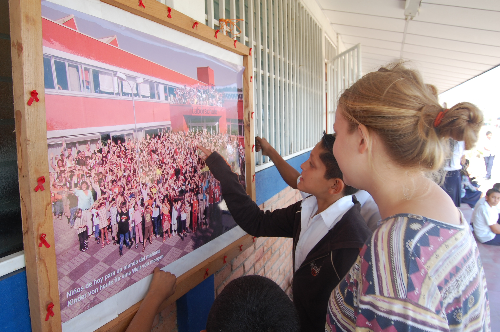
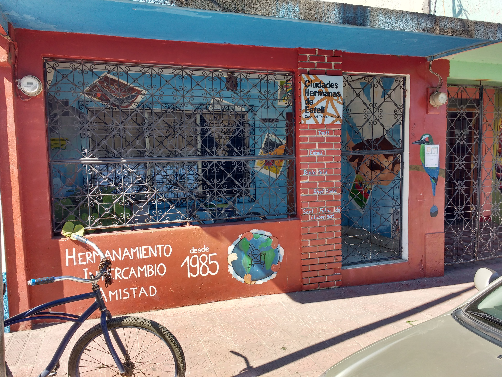

Hermanamiento Estelí
Acciones
Oficina
Del Super Las Segovias, 1/2 c al este

Parada en Estelí

Mapa de transporte público

Mapa de transporte público, pintado a mano


Software Libre

No Software Libre: iOS
Software Libre: Android
Revolución Geoespacial


Publicidad en Facebook
Datos Abiertos

Mapa de Contaminación Acústica
Mapa de Cobertura
Equipo Humanitario de OSM
Source: youtu.be/BwMM_vsA3aY
Florianópolis, Brasil


Mapa de transporte público en Estelí
julio 2017

Mapa de transporte público en Estelí
estado actual


Transportr (Android, Software Libre)
Transit (iOS y Android, No Software Libre)


¡Uníte a la comunidad!
Web: MapaNica.net
Correo: contacto@mapanica.net
Fuentes
- Mapa Berlin: http://www.polsoz.fu-berlin.de/v/dgpuk2012/anreise/S_UAusschnitt_1112_2011_1_.pdf
- Google Maps Logo: By Source, Fair use, https://en.wikipedia.org/w/index.php?curid=54643996
- Google Maps: https://www.google.com.ni/maps/place/Estelí/@13.0882563,-86.3541511,14z
- OpenStreetMap: https://www.openstreetmap.org/#map=14/13.0904/-86.3656
- Libro: De Tom Murphy VII - Producto propío, CC BY-SA 3.0, https://commons.wikimedia.org/w/index.php?curid=295698
- Wikipedia: De Version 1 de Nohat (concepto de Paullusmagnus); Wikimedia. - File:Wikipedia-logo.svg as of 14. Mai 2010T23:16:42, CC BY-SA 3.0, https://commons.wikimedia.org/w/index.php?curid=10337301
- Android: By Google - File:Android robot.svg, https://android.com, CC BY 3.0, https://commons.wikimedia.org/w/index.php?curid=44801497
- Contaminación Acústica: http://lukasmartinelli.ch/maps/noise-pollution.html#14.58/13.0931/-86.3501
- OpenSignal: http://opensignal.com/?z=12&minLat=12.995&maxLat=13.175&minLng=-86.542&maxLng=-86.184&s=7100&t=2-3-4
- Video Haiti: https://www.youtube.com/watch?v=BwMM_vsA3aY
- Mapa estado actual: https://www.openstreetmap.org/#map=14/13.0911/-86.3536&layers=T
Descargar Transportr para Android